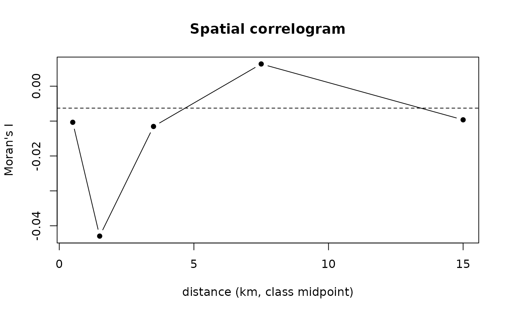

Moran's I by distance class: how far apart two points stop resembling each other.
Source:R/block_bootstrap.R
spatial_correlogram.RdFor each class of distance, Moran's I of value over the pairs of points
that far apart: the mean product of their deviations from the mean, over
the variance. Near zero, points that far apart are as unlike as any two;
the distance where it falls to zero is the scale blocks should exceed. For
two models compared at the same points, value is the difference of their
errors – the quantity whose mean is compared.
Value
A spatial_correlogram: a tibble with from_km, to_km,
n_pairs, moran_i, and expected, Moran's I with no spatial structure
(-1/(n-1)).
Examples
ex <- example_landscape()
obs <- ex$profiles$soc_stock
set.seed(1)
pred_a <- obs * exp(rnorm(length(obs), 0, 0.20)) # two models' predictions
pred_b <- obs * exp(rnorm(length(obs), 0, 0.25))
d <- abs(pred_a - obs) - abs(pred_b - obs) # what a comparison of the two compares
cg <- spatial_correlogram(ex$profiles$x, ex$profiles$y, d,
breaks_km = c(0, 1, 2, 5, 10, 20))
cg
#>
#> <spatial_correlogram> 160 point(s), Moran's I by distance class
#> # A tibble: 5 × 4
#> from_km to_km n_pairs moran_i
#> <dbl> <dbl> <dbl> <dbl>
#> 1 0 1 624 -0.01
#> 2 1 2 521 -0.043
#> 3 2 5 1614 -0.012
#> 4 5 10 4328 0.006
#> 5 10 20 5563 -0.01
#> With no spatial structure, about -0.0063. Where it falls to that, points so far
#> apart are as unlike as any two: the scale blocks should exceed.
plot(cg)
